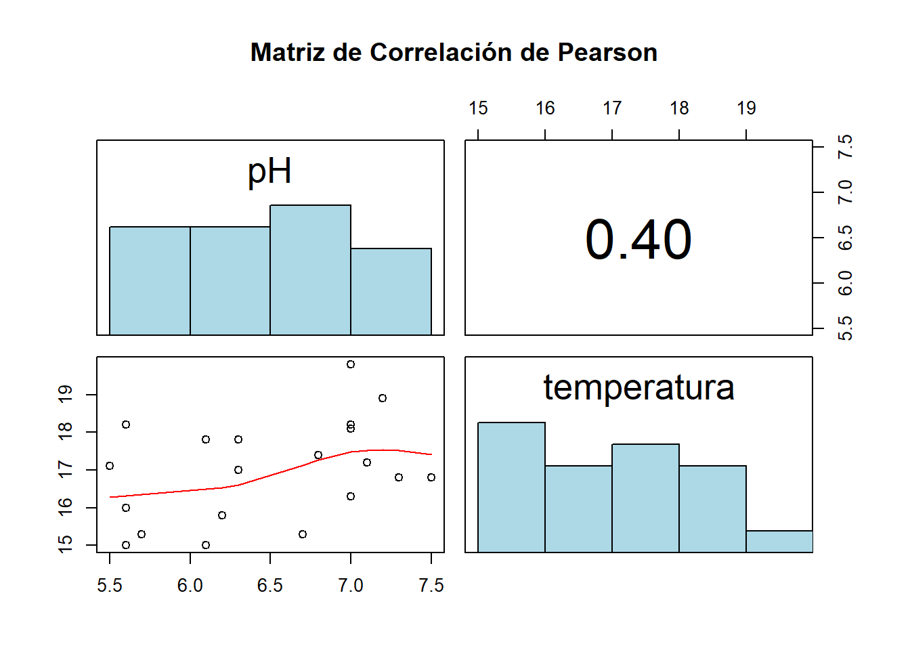
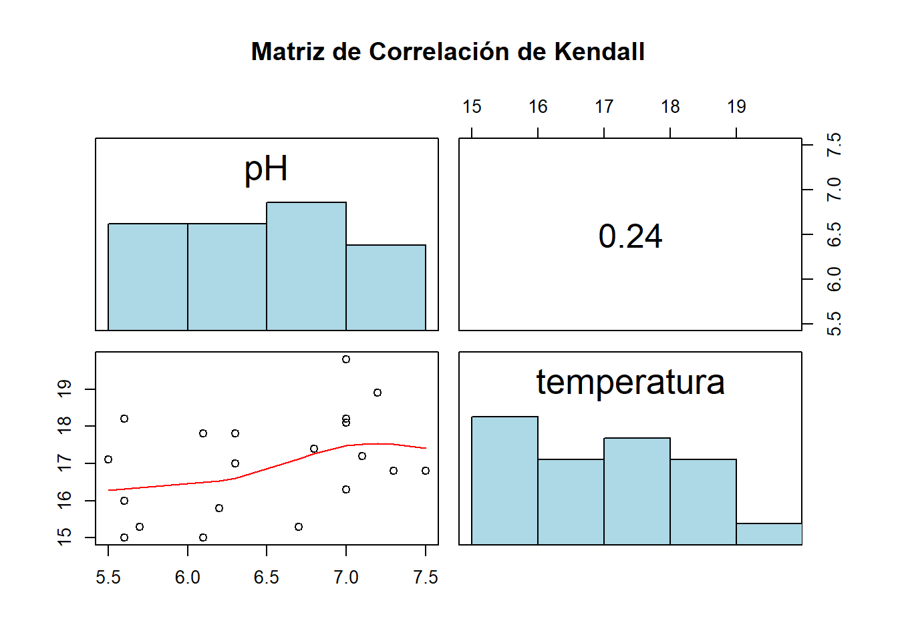
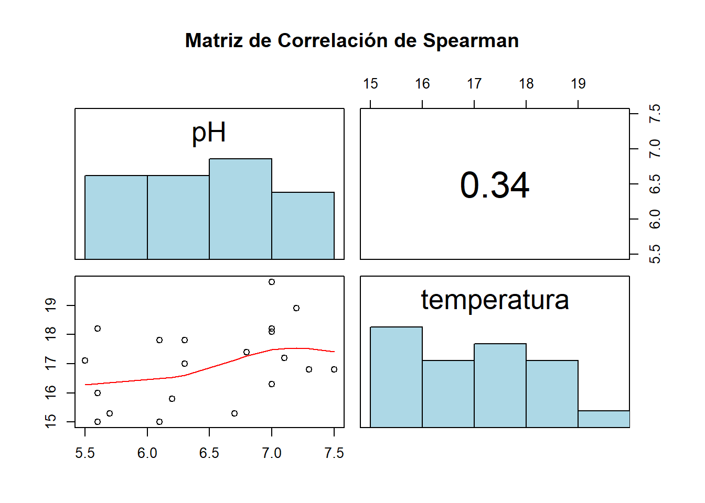
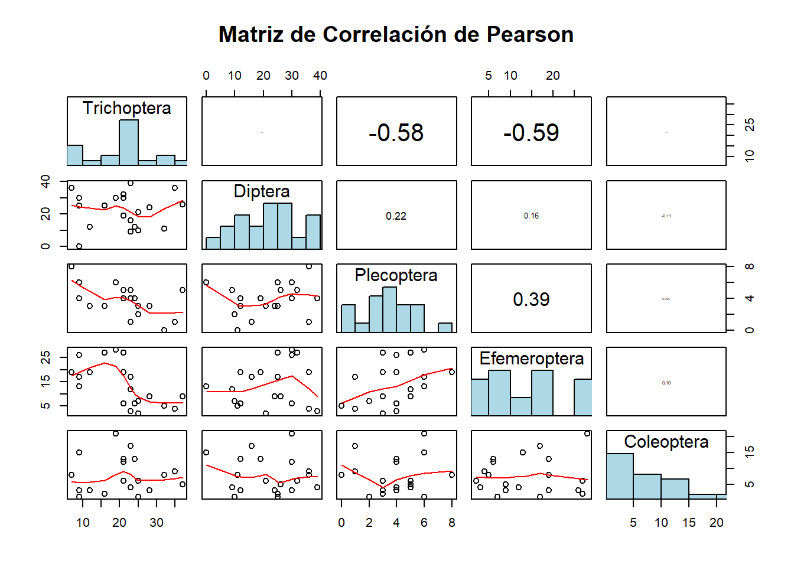
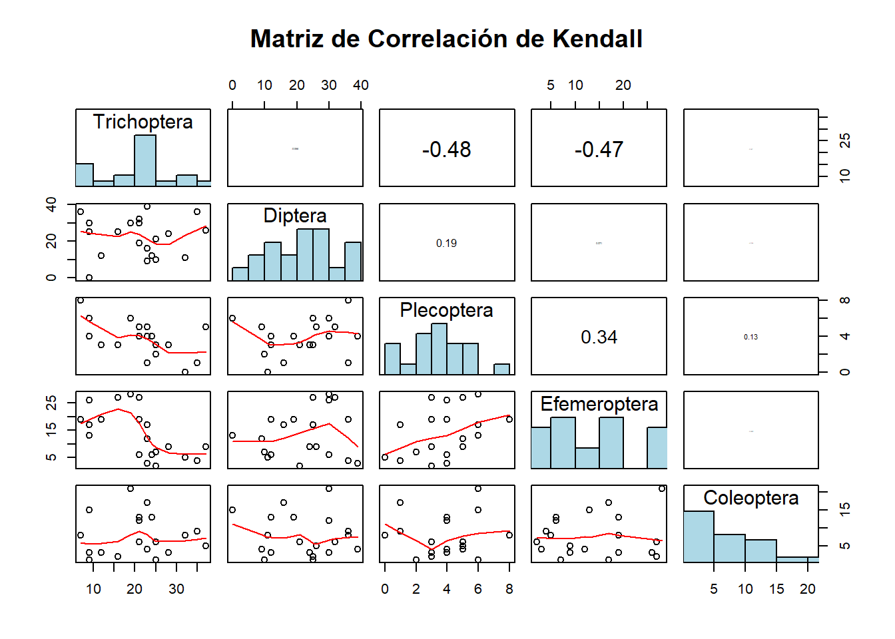

library(corrplot)
library(dplyr)
library(gclus)
library(Hmisc)
library(psych)
library(ade4)
library(vegan)
library(ggplot2)
library(RgoogleMaps)
library(googleVis)
library(labdsv)Seminario
# Crear manualmente el archivo panelutils.R con todo el contenido necesario
writeLines(
'panel.hist <- function(x, ...) {
usr <- par("usr")
on.exit(par(usr))
par(usr = c(usr[1:2], 0, 1.5))
h <- hist(x, plot = FALSE)
breaks <- h$breaks
nB <- length(breaks)
y <- h$counts
y <- y/max(y)
rect(breaks[-nB], 0, breaks[-1], y, col = "lightblue", ...)
}
panel.cor <- function(x, y, digits = 2, prefix = "", cex.cor, ...) {
usr <- par("usr")
on.exit(par(usr))
par(usr = c(0, 1, 0, 1))
r <- cor(x, y, use = "complete.obs")
txt <- format(c(r, 0.123456789), digits = digits)[1]
txt <- paste(prefix, txt, sep = "")
if(missing(cex.cor)) cex.cor <- 0.8/strwidth(txt)
text(0.5, 0.5, txt, cex = cex.cor * abs(r))
}
panel.smooth <- function(x, y, col = par("col"), bg = NA, pch = par("pch"),
cex = 1, col.smooth = "red", span = 2/3, iter = 3, ...) {
points(x, y, pch = pch, col = col, bg = bg, cex = cex)
ok <- is.finite(x) & is.finite(y)
if(any(ok))
lines(stats::lowess(x[ok], y[ok], f = span, iter = iter),
col = col.smooth, ...)
}', "panelutils.R")
source("panelutils.R") # Cargar las funcionesdatos <- read.csv2("insectos.csv")env <- datos %>%
select(2:3)
biol <- datos %>%
select(4:8)Para datos Ambientales
## Standardization of all environmental variables
# Center and scale = standardize the variables (z-scores)
env.z <- decostand(env, "standardize")
apply(env.z, 2, mean) pH temperatura
5.356609e-16 -1.366669e-15 # means = 0
apply(env.z, 2, sd) # standard deviations = 1 pH temperatura
1 1 # Same standardization using the scale() function (which returns
# a matrix)
env.z <- as.data.frame(scale(env))Coeficiente de Pearson
# Pearson r linear correlation among environmental variables
env.pearson <- cor(env) # default method = "pearson"
# Reorder the variables prior to plotting
env.o <- order.single(env.pearson)
# pairs() is a function to plot a matrix of bivariate scatter
# plots. panelutils.R is a set of functions that add useful
# features to pairs().
pairs(env[, env.o],
lower.panel = panel.smooth,
upper.panel = function(x, y, ...) panel.cor(x, y, method = "pearson"),
diag.panel = panel.hist,
main = "Matriz de Correlación de Pearson")
Coeficiente de Kendall
panel.cor <- function(x, y, digits = 2, prefix = "", cex.cor, method = "pearson", ...) {
usr <- par("usr"); on.exit(par(usr))
par(usr = c(0, 1, 0, 1))
r <- cor(x, y, method = method)
txt <- format(c(r, 0.123456789), digits = digits)[1]
txt <- paste0(prefix, txt)
if (missing(cex.cor)) cex.cor <- 0.8/strwidth(txt)
text(0.5, 0.5, txt, cex = cex.cor * abs(r))
}# Kendalltau rank correlationamong environmental variables,
# no colours
env.ken <-cor(env, method ="kendall")
env.k <- order.single(env.ken)
pairs(env[, env.o],
lower.panel = panel.smooth,
upper.panel = function(x, y, ...) panel.cor(x, y, method = "kendall"),
diag.panel = panel.hist,
main = "Matriz de Correlación de Kendall")
Coeficiente de Spearman
# Correlación de Spearman entre variables ambientales
env.spearman <- cor(env, method = "spearman")
round(env.spearman, 2) pH temperatura
pH 1.00 0.34
temperatura 0.34 1.00# Reordenar las variables según la similitud de correlaciones
env.s <- order.single(env.spearman)panel.cor <- function(x, y, digits = 2, prefix = "", cex.cor, method = "pearson", ...) {
usr <- par("usr"); on.exit(par(usr))
par(usr = c(0, 1, 0, 1))
r <- cor(x, y, method = method)
txt <- format(c(r, 0.123456789), digits = digits)[1]
txt <- paste0(prefix, txt)
if (missing(cex.cor)) cex.cor <- 0.8/strwidth(txt)
text(0.5, 0.5, txt, cex = cex.cor * abs(r))
}panel.hist <- function(x, ...) {
usr <- par("usr"); on.exit(par(usr))
par(usr = c(usr[1:2], 0, 1.5))
h <- hist(x, plot = FALSE)
breaks <- h$breaks; nB <- length(breaks)
y <- h$counts; y <- y / max(y)
rect(breaks[-nB], 0, breaks[-1], y, col = "lightblue", ...)
}pairs(env[, env.o],
lower.panel = panel.smooth,
upper.panel = function(x, y, ...) panel.cor(x, y, method = "spearman"),
diag.panel = panel.hist,
main = "Matriz de Correlación de Spearman")
Para datos Biológicos
Coeficiente de Pearson
# Pearson r linear correlation among environmental variables
biol.pearson <- cor(biol) # default method = "pearson"
round (biol.pearson, 2) Efemeroptera Plecoptera Trichoptera Diptera Coleoptera
Efemeroptera 1.00 0.39 -0.59 0.16 0.10
Plecoptera 0.39 1.00 -0.58 0.22 0.09
Trichoptera -0.59 -0.58 1.00 0.04 0.02
Diptera 0.16 0.22 0.04 1.00 -0.11
Coleoptera 0.10 0.09 0.02 -0.11 1.00 # Reorder the variables prior to plotting
biol.o <- order.single(biol.pearson)
# pairs() is a function to plot a matrix of bivariate scatter
# plots. panelutils.R is a set of functions that add useful
# features to pairs().
pairs(biol[, biol.o],
lower.panel = panel.smooth,
upper.panel = function(x, y, ...) panel.cor(x, y, method = "pearson"),
diag.panel = panel.hist,
main = "Matriz de Correlación de Pearson")
Coeficiente de Kendall
panel.cor <- function(x, y, digits = 2, prefix = "", cex.cor, method = "pearson", ...) {
usr <- par("usr"); on.exit(par(usr))
par(usr = c(0, 1, 0, 1))
r <- cor(x, y, method = method)
txt <- format(c(r, 0.123456789), digits = digits)[1]
txt <- paste0(prefix, txt)
if (missing(cex.cor)) cex.cor <- 0.8/strwidth(txt)
text(0.5, 0.5, txt, cex = cex.cor * abs(r))
}# Kendalltau rank correlationamong environmental variables,
# no colours
biol.ken <-cor(biol, method ="kendall")
round (biol.ken, 2) Efemeroptera Plecoptera Trichoptera Diptera Coleoptera
Efemeroptera 1.00 0.34 -0.47 0.07 0.01
Plecoptera 0.34 1.00 -0.48 0.19 0.13
Trichoptera -0.47 -0.48 1.00 -0.07 0.02
Diptera 0.07 0.19 -0.07 1.00 -0.01
Coleoptera 0.01 0.13 0.02 -0.01 1.00biol.k <- order.single(biol.ken)
pairs(biol[, biol.o],
lower.panel = panel.smooth,
upper.panel = function(x, y, ...) panel.cor(x, y, method = "kendall"),
diag.panel = panel.hist,
main = "Matriz de Correlación de Kendall")
Coeficiente de Spearman
# Correlación de Spearman entre variables ambientales
biol.spearman <- cor(biol, method = "spearman")
round(biol.spearman, 2) Efemeroptera Plecoptera Trichoptera Diptera Coleoptera
Efemeroptera 1.00 0.43 -0.69 0.10 -0.02
Plecoptera 0.43 1.00 -0.58 0.23 0.12
Trichoptera -0.69 -0.58 1.00 -0.12 0.03
Diptera 0.10 0.23 -0.12 1.00 0.00
Coleoptera -0.02 0.12 0.03 0.00 1.00# Reordenar las variables según la similitud de correlaciones
biol.s <- order.single(biol.spearman)panel.cor <- function(x, y, digits = 2, prefix = "", cex.cor, method = "pearson", ...) {
usr <- par("usr"); on.exit(par(usr))
par(usr = c(0, 1, 0, 1))
r <- cor(x, y, method = method)
txt <- format(c(r, 0.123456789), digits = digits)[1]
txt <- paste0(prefix, txt)
if (missing(cex.cor)) cex.cor <- 0.8/strwidth(txt)
text(0.5, 0.5, txt, cex = cex.cor * abs(r))
}panel.hist <- function(x, ...) {
usr <- par("usr"); on.exit(par(usr))
par(usr = c(usr[1:2], 0, 1.5))
h <- hist(x, plot = FALSE)
breaks <- h$breaks; nB <- length(breaks)
y <- h$counts; y <- y / max(y)
rect(breaks[-nB], 0, breaks[-1], y, col = "lightblue", ...)
}pairs(biol[, biol.o],
lower.panel = panel.smooth,
upper.panel = function(x, y, ...) panel.cor(x, y, method = "spearman"),
diag.panel = panel.hist,
main = "Matriz de Correlación de Kendall")